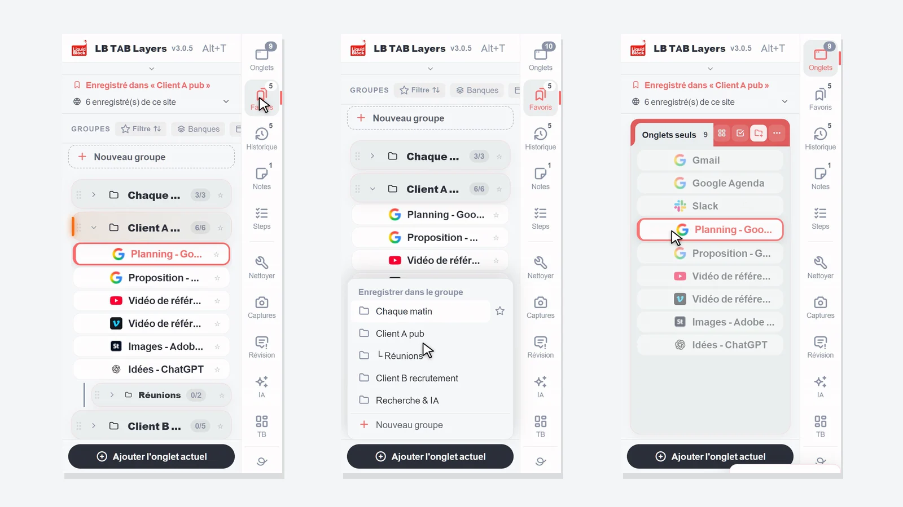
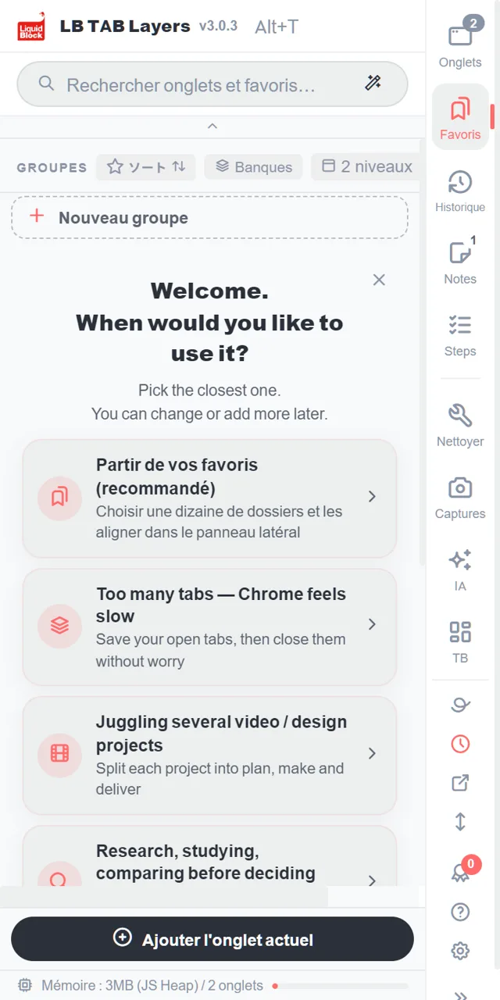
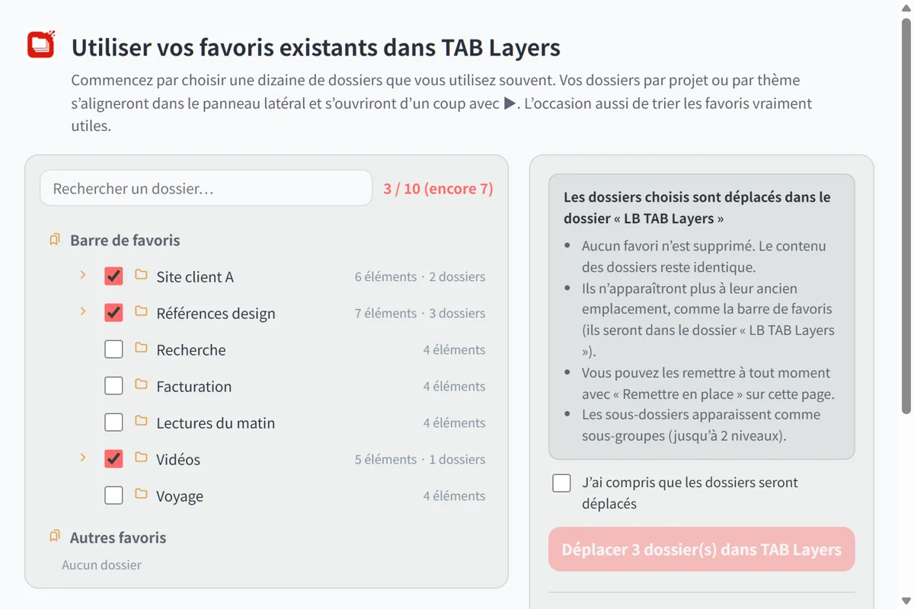
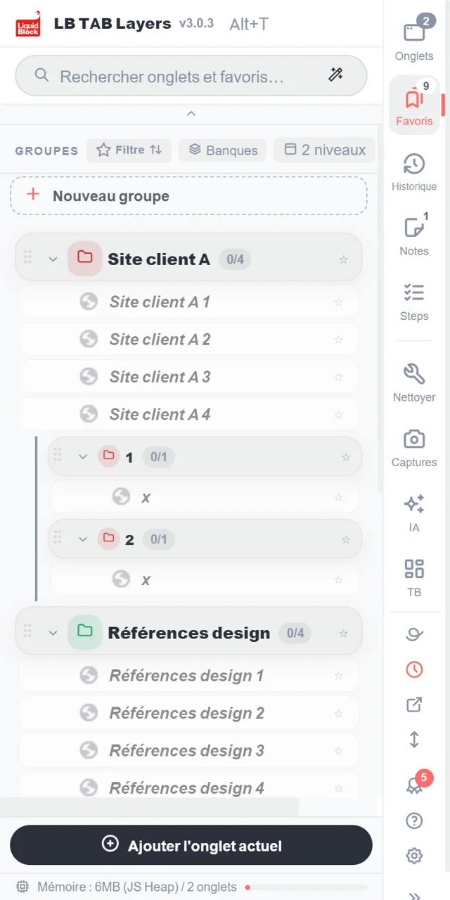
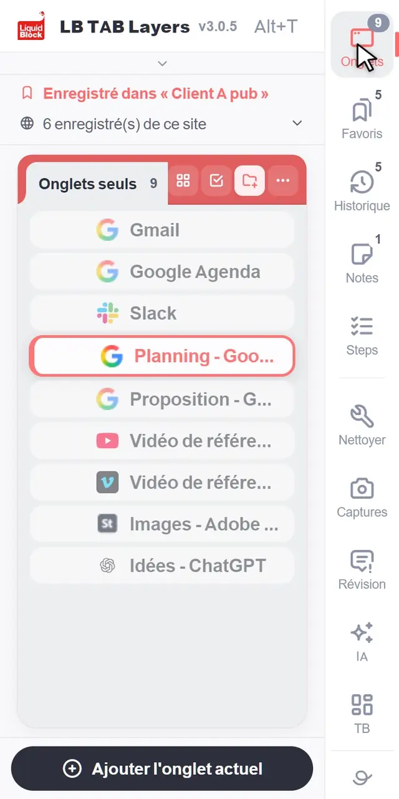
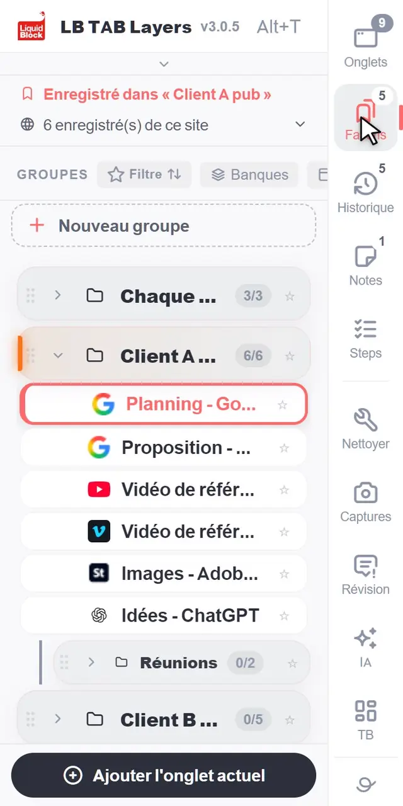
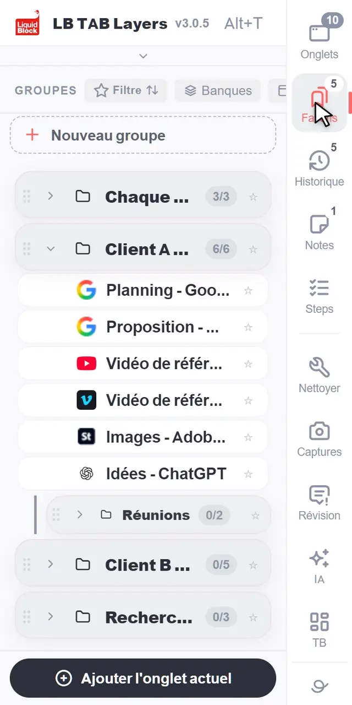
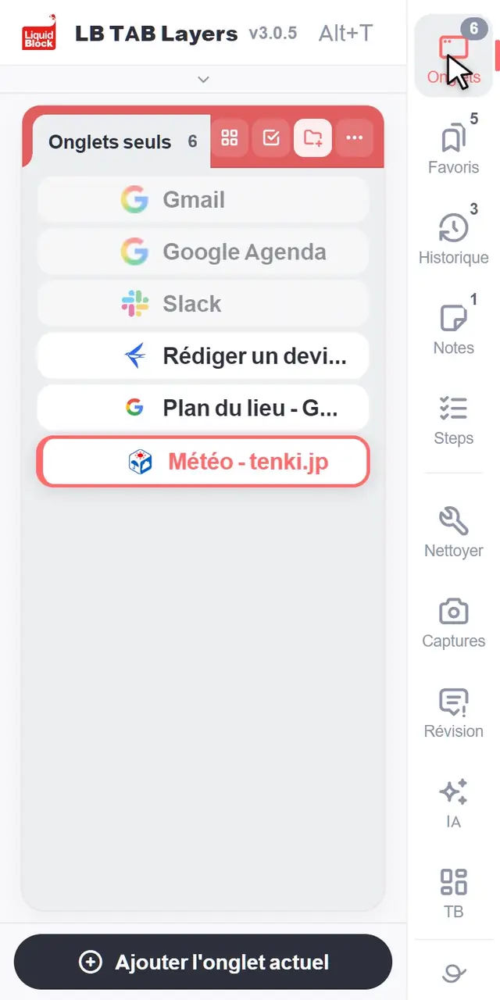
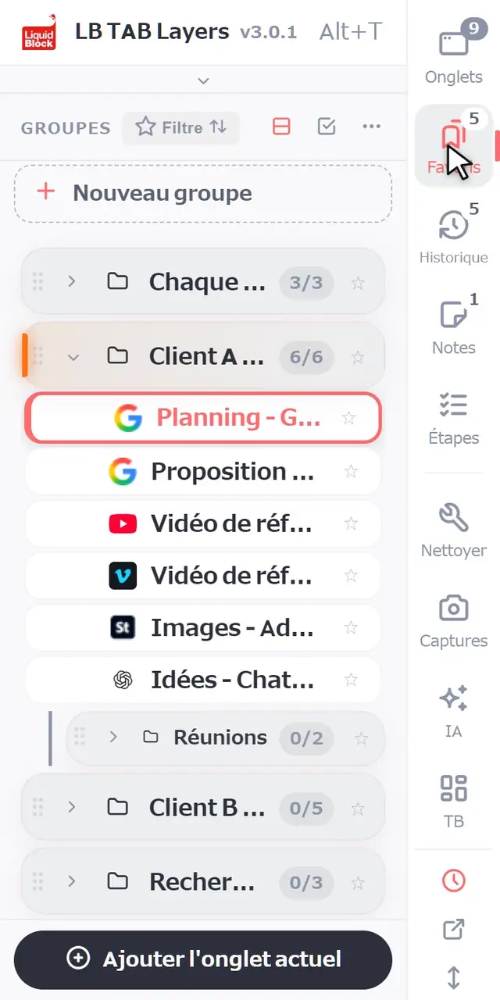
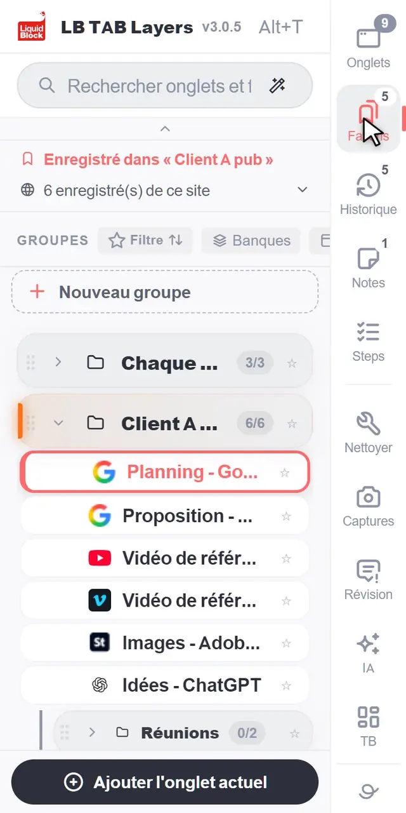

Appuyez sur Alt+T (Option+T sur Mac) pour ouvrir LB TAB Layers. Pour commencer, il n’y a que trois choses à retenir : enregistrez l’onglet ouvert avec Ajouter l'onglet actuel, ouvrez tout un groupe avec ▶, puis refermez-le avec ■. Tout ce que vous enregistrez est conservé en favoris Chrome : rien ne disparaît quand vous fermez les onglets ou redémarrez Chrome.
Merci d’avoir installé LB TAB Layers. Cette page présente uniquement ce qu’il vous faut pendant vos cinq premières minutes.
L’idée est simple. Les onglets, c’est « maintenant » : ce sur quoi vous travaillez. Les favoris, c’est « plus tard » : ce à quoi vous reviendrez. L’historique du jour, c’est la « trace » de ce que vous avez consulté. LB TAB Layers vous permet de passer de l’un à l’autre dans un seul panneau latéral.
💡 Appuyez sur Alt+T (Option+T sur Mac) pour l’ouvrir à tout moment. Vous pouvez aussi cliquer sur l’icône LB TAB Layers dans la barre d’outils. Si vous ne voyez pas l’icône, cliquez sur l’icône en forme de pièce de puzzle et épinglez LB TAB Layers.
D’abord : importer vos favoris existants dans TAB Layers (recommandé)
Si vous avez déjà des dossiers de favoris dans Chrome, les importer d’abord dans TAB Layers est le moyen le plus rapide de commencer. Inutile de créer de nouveaux groupes : vos dossiers deviennent des groupes par projet ou par thème, alignés dans le panneau latéral.
Cliquez sur « Partir de vos favoris (recommandé) »
C’est tout en haut de l’écran d’accueil qui s’affiche juste après l’installation. Vous pouvez aussi l’ouvrir plus tard via Paramètres → Données → Favoris, ou avec « Importer des favoris » en haut du grand tableau de bord.

Choisissez les dossiers que vous utilisez souvent (une dizaine pour commencer)
Vos dossiers de favoris Chrome sont listés. Cochez ceux que vous utilisez souvent. Un compteur comme « 3 / 10 » indique combien vous en avez choisi. Pas besoin de tout prendre : c’est aussi l’occasion de voir quels favoris vous servent vraiment.

Cochez « J’ai compris que les dossiers seront déplacés » et déplacez-les
Les dossiers passent dans le dossier « LB TAB Layers » de vos favoris Chrome. Rien n’est supprimé et le contenu reste le même. Ils n’apparaîtront plus à leur ancien emplacement (comme la barre de favoris), mais vous pouvez les remettre à tout moment avec « Remettre en place » sur la même page.
Ils apparaissent comme groupes dans le panneau latéral
Chaque dossier devient un groupe, et ses sous-dossiers deviennent des sous-groupes. Cliquez sur le ▶ d’un groupe pour ouvrir toutes ses pages d’un coup.

1. Se repérer
Une colonne de boutons longe le bord du panneau : Onglets, Favoris, Historique, Notes et Étapes. Cliquez sur l’un d’eux pour afficher la vue correspondante. Les petits chiffres indiquent par exemple le nombre d’onglets ouverts ou de groupes.
- Onglets — les onglets ouverts en ce moment, qui ne sont encore enregistrés nulle part
- Favoris — les onglets que vous avez enregistrés, rangés en groupes, un par projet
- Historique — les pages consultées aujourd’hui, y compris celles que vous n’avez pas enregistrées
- Notes et Étapes — des notes pour votre travail et des listes de contrôle à suivre étape par étape
Sous le séparateur se trouvent des outils. Vous n’en aurez pas besoin le premier jour.

2. Les bases
Créer un groupe
Dans la vue Favoris, cliquez sur + Nouveau groupe en haut de la liste. Donnez-lui le nom d’un travail, par exemple « Client C site » ou « Chaque matin ». Le plus pratique : un groupe par projet.

Enregistrer l’onglet ouvert
Cliquez sur Ajouter l'onglet actuel en bas du panneau, puis choisissez un groupe. Les groupes qui contiennent déjà la page sont marqués Enregistré.

Enregistrer plusieurs onglets ouverts d’un coup
Dans la vue Onglets, cliquez sur le cercle à gauche d’un onglet pour commencer la sélection. Cliquez sur les cercles des autres onglets voulus, puis sur Vers groupe en bas, et choisissez un groupe. Vous pouvez aussi glisser les onglets un par un sur un groupe.

Tout ouvrir avec ▶, tout fermer avec ■
Survolez un groupe et cliquez sur ▶ pour ouvrir tous ses onglets. Ils s’ouvrent ensemble en un groupe d’onglets Chrome, avec le même nom et la même couleur que votre groupe. Quand vous avez terminé, cliquez sur ■ pour fermer ce groupe d’onglets en une fois. Vos onglets restent enregistrés.

Rechercher
Tapez dans le champ de recherche en haut pour parcourir en même temps vos onglets ouverts, vos onglets enregistrés et l’historique du jour. Les petites fautes de frappe ne posent pas de problème.

3. Une façon simple d’organiser votre travail
Un groupe par projet
Voyez un groupe comme un bureau réservé à un seul travail. Toute une journée peut s’organiser ainsi :
- Le matin — cliquez sur ▶ pour le projet du jour et reprenez là où vous vous étiez arrêté
- Quand vous changez de tâche — fermez le projet en cours avec ■ et ouvrez le suivant avec ▶
- En fin de journée — cliquez simplement sur ■. Demain, ▶ fera tout revenir
Les sites de tous les jours, sur la barre d’épingles
Pour les sites que vous ouvrez chaque jour, comme votre messagerie ou votre agenda, faites un clic droit sur un onglet ou un favori et choisissez Ajouter à la barre d’épingles. Ils se rangent en petites icônes en haut du panneau et s’ouvrent d’un clic (jusqu’à 12). Vous pouvez aussi les y faire glisser.
Une fenêtre pour chaque projet
Faites un clic droit sur un groupe et choisissez Ouvrir dans une nouvelle fenêtre pour l’ouvrir en groupe d’onglets dans une fenêtre à part. C’est pratique pour mener deux travaux en parallèle, ou pour utiliser un deuxième écran.
Oublié d’enregistrer quelque chose ? L’historique du jour l’a gardé
Inutile de tout enregistrer. Les pages que vous n’avez pas enregistrées restent dans l’Historique, dans l’ordre où vous les avez consultées aujourd’hui. Enregistrez l’important dans un groupe et fermez le reste : en général, cela suffit.
🔒 Tout ce que vous enregistrez est conservé en favoris Chrome. Vos onglets enregistrés restent en place quand vous les fermez ou redémarrez Chrome, et LB TAB Layers n’envoie vos favoris nulle part. Les données conservées dans l’extension, comme les notes, peuvent être exportées depuis les Paramètres.
Découvrez dix autres actions dans le guide (en anglais).
Questions fréquentes
Q. Comment ouvrir LB TAB Layers ?
Appuyez sur Alt+T sur votre clavier (Option+T sur Mac). Vous pouvez aussi cliquer sur l’icône LB TAB Layers dans la barre d’outils.
Q. Si je désinstalle l’extension, mes onglets enregistrés disparaissent-ils ?
Non. Les onglets enregistrés restent dans vos favoris Chrome, dans des dossiers qui portent le même nom que vos groupes. Les données conservées dans l’extension, comme les notes, sont effacées : exportez-les d’abord depuis les Paramètres.
Q. Où cherche le champ de recherche ?
Dans vos onglets ouverts, dans les onglets enregistrés dans vos groupes et dans l’historique du jour, tout à la fois.
Q. Est-ce gratuit ?
Oui. La version gratuite permet de créer jusqu’à 5 groupes. L’historique du jour, les Étapes, le tableau de bord et la recherche IA sont des fonctions PRO, et toutes les fonctions sont disponibles pendant 90 jours après l’installation.
Commencez par un seul projet.
Ouvrez avec Alt+T, enregistrez l’onglet ouvert, ouvrez avec ▶ et fermez avec ■. Aucun compte nécessaire · Enregistré en favoris Chrome · Toutes les fonctions gratuites pendant 90 jours
Ajouter gratuitement à Chrome →